영통탑내과 원본 로고 적용 결과
2026년 10월 1일. 현재 사이트 이미지 17개와 탭 아이콘 1개를 수정했습니다. 이전 생성 이미지 4개도 원본 로고를 넣은 수정판으로 보관했습니다. 과거 검증 증거 원본은 당시 기록으로 유지합니다.
복사한 원본 로고
기존 홈페이지에서 가져와 보관한 로고 파일의 해시와 투명도를 확인했습니다. 심볼과 병원명·의원·영문을 포함한 전체 로고를 294×77px 원래 픽셀 그대로 합성했습니다. 생성형 도구로 다시 그리거나 확대하지 않았습니다.

현재 이미지 17개와 이전판 4개 모두, 로고 교체 영역 밖의 RGB 픽셀이 수정 전과 완전히 같습니다. 그림·안내 문구·이미지 크기를 보존했습니다. 합성된 로고 영역은 원본 로고를 같은 배경에 합성한 예상 픽셀과 일치합니다.
이미지별 수정 전후
| 번호 | 이미지와 위치 | 수정 전 | 수정 후 | 픽셀 검증 |
|---|---|---|---|---|
| 1 | 심장질환 배너/conditions/heart-disease/수정된 마스터 사이트 파일 | 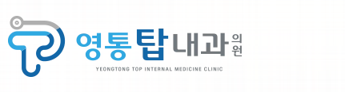 | 원본 294×77px 그대로 로고 영역 밖 변경: 0px 로고 픽셀 대조: 일치 캔버스 1672×941px 유지 | |
| 2 | 소화기질환 배너/conditions/digestive/수정된 마스터 사이트 파일 | 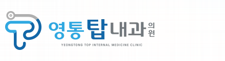 | 원본 294×77px 그대로 로고 영역 밖 변경: 0px 로고 픽셀 대조: 일치 캔버스 1672×941px 유지 | |
| 3 | 호흡기·감염질환 배너/conditions/respiratory-infections/수정된 마스터 사이트 파일 | 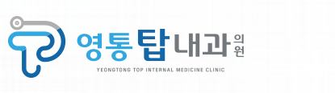 | 원본 294×77px 그대로 로고 영역 밖 변경: 0px 로고 픽셀 대조: 일치 캔버스 1672×941px 유지 | |
| 4 | 성인 예방접종 배너/services/vaccinations/수정된 마스터 사이트 파일 | 원본 294×77px 그대로 로고 영역 밖 변경: 0px 로고 픽셀 대조: 일치 캔버스 1672×941px 유지 | ||
| 5 | 만성질환 배너/conditions/chronic-disease/수정된 마스터 사이트 파일 | 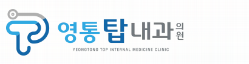 | 원본 294×77px 그대로 로고 영역 밖 변경: 0px 로고 픽셀 대조: 일치 캔버스 1672×941px 유지 | |
| 6 | 갑상선·경동맥·경부 멍울 배너/conditions/thyroid-carotid-neck/수정된 마스터 사이트 파일 | 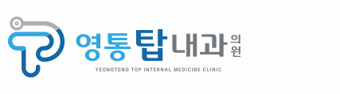 | 원본 294×77px 그대로 로고 영역 밖 변경: 0px 로고 픽셀 대조: 일치 캔버스 1672×941px 유지 | |
| 7 | 신장질환 배너/conditions/kidney/수정된 마스터 사이트 파일 | 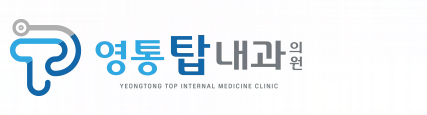 | 원본 294×77px 그대로 로고 영역 밖 변경: 0px 로고 픽셀 대조: 일치 캔버스 1672×941px 유지 | |
| 8 | 암 치료 중 지지치료 배너/services/cancer-support/수정된 마스터 사이트 파일 | 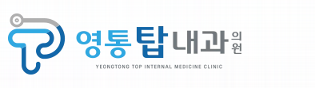 | 원본 294×77px 그대로 로고 영역 밖 변경: 0px 로고 픽셀 대조: 일치 캔버스 1672×941px 유지 | |
| 9 | 검사·시술 배너/services/수정된 마스터 사이트 파일 | 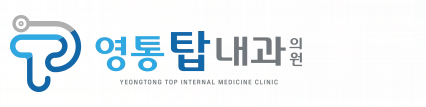 | 원본 294×77px 그대로 로고 영역 밖 변경: 0px 로고 픽셀 대조: 일치 캔버스 1672×941px 유지 | |
| 10 | 건강검진·서류안내 배너/checkups/수정된 마스터 사이트 파일 | 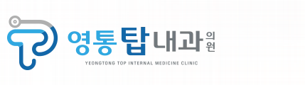 | 원본 294×77px 그대로 로고 영역 밖 변경: 0px 로고 픽셀 대조: 일치 캔버스 1672×941px 유지 | |
| 11 | 증상백과 배너/symptoms/수정된 마스터 사이트 파일 | 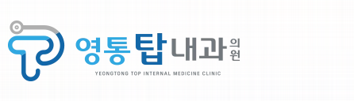 | 원본 294×77px 그대로 로고 영역 밖 변경: 0px 로고 픽셀 대조: 일치 캔버스 1672×941px 유지 | |
| 12 | 질환백과 배너/diseases/수정된 마스터 사이트 파일 | 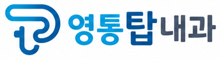 | 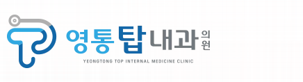 | 원본 294×77px 그대로 로고 영역 밖 변경: 0px 로고 픽셀 대조: 일치 캔버스 1672×940px 유지 |
| 13 | 심장검사 진행 순서 안내도/services/heart/수정된 마스터 사이트 파일 | 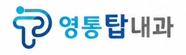 | 원본 294×77px 그대로 로고 영역 밖 변경: 0px 로고 픽셀 대조: 일치 캔버스 1086×1448px 유지 | |
| 14 | 위·대장내시경 검사 전 준비 안내도/services/endoscopy/수정된 마스터 사이트 파일 | 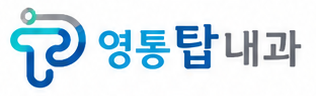 | 원본 294×77px 그대로 로고 영역 밖 변경: 0px 로고 픽셀 대조: 일치 캔버스 1086×1448px 유지 | |
| 15 | 조직검사·용종절제 후 주의사항 안내도/health/after-endoscopy/수정된 마스터 사이트 파일 | 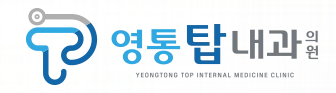 | 원본 294×77px 그대로 로고 영역 밖 변경: 0px 로고 픽셀 대조: 일치 캔버스 1086×1448px 유지 | |
| 16 | 국가·채용·비자검진 진행 순서 안내도/checkups/수정된 마스터 사이트 파일 | 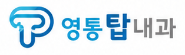 | 원본 294×77px 그대로 로고 영역 밖 변경: 0px 로고 픽셀 대조: 일치 캔버스 1086×1448px 유지 | |
| 17 | 2026 성인 예방접종 일정표/services/vaccinations/수정된 마스터 사이트 파일 | 원본 294×77px 그대로 로고 영역 밖 변경: 0px 로고 픽셀 대조: 일치 캔버스 1086×1448px 유지 | ||
| 18 | 만성질환 배너 이전판 보관용 수정판 수정된 마스터 | 원본 294×77px 그대로 로고 영역 밖 변경: 0px 로고 픽셀 대조: 일치 캔버스 1672×941px 유지 | ||
| 19 | 검사·시술 배너 이전판 보관용 수정판 수정된 마스터 | 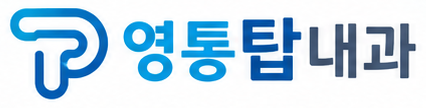 | 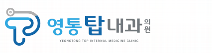 | 원본 294×77px 그대로 로고 영역 밖 변경: 0px 로고 픽셀 대조: 일치 캔버스 1672×941px 유지 |
| 20 | 성인 예방접종 배너 이전판 보관용 수정판 수정된 마스터 | 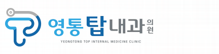 | 원본 294×77px 그대로 로고 영역 밖 변경: 0px 로고 픽셀 대조: 일치 캔버스 1672×941px 유지 | |
| 21 | 2026 성인 예방접종 일정표 이전판 보관용 수정판 수정된 마스터 | 원본 294×77px 그대로 로고 영역 밖 변경: 0px 로고 픽셀 대조: 일치 캔버스 1086×1448px 유지 |


탭 아이콘
현재 SVG 아이콘에는 원본 로고에서 왼쪽 심볼 73×77px을 잘라낸 PNG를 그대로 넣었습니다. 기존 초록색 T 도형을 교체했습니다.

검증 결과
콘텐츠 검사 135페이지·38자산, 요구사항 검사, TypeScript·ESLint, 단위 검사 6개와 브라우저 검사 3개가 통과했습니다. 390px·1440px 화면에서 이미지 17개 모두 정상 표시·자연 비율·같은 수정 PNG 열기와 안내도 확대·닫기를 확인했습니다. 정적 출력 검사도 135경로에서 통과했으며 review/noindex를 유지했습니다.
최종 검증 기록 · 브라우저 검사 로그 · 빌드와 정적 출력 검사 로그
파일 반영과 확인 범위
현재 마스터 17개와 공개 PNG 17개를 갱신하고, 자산 원장의 해시·용량·출처를 함께 수정했습니다. 원본과 다른 로고가 다시 들어오면 콘텐츠 검사에서 거절하도록 원본 참조와 로고 픽셀 검사를 추가했습니다. 현재 배포 주소에 맞는 경로로 로컬 review 사이트를 다시 빌드했습니다. 운영 서버에 배포한 기록은 아닙니다.